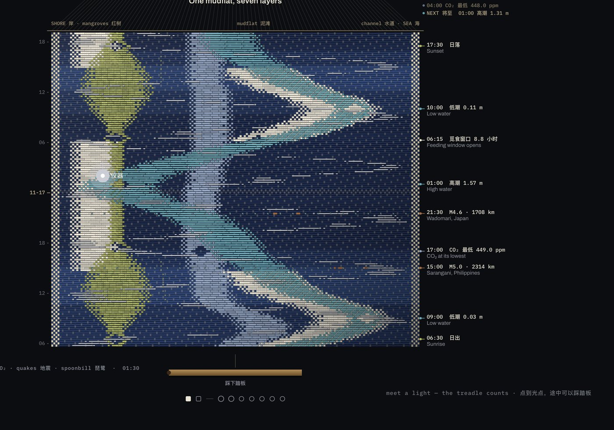
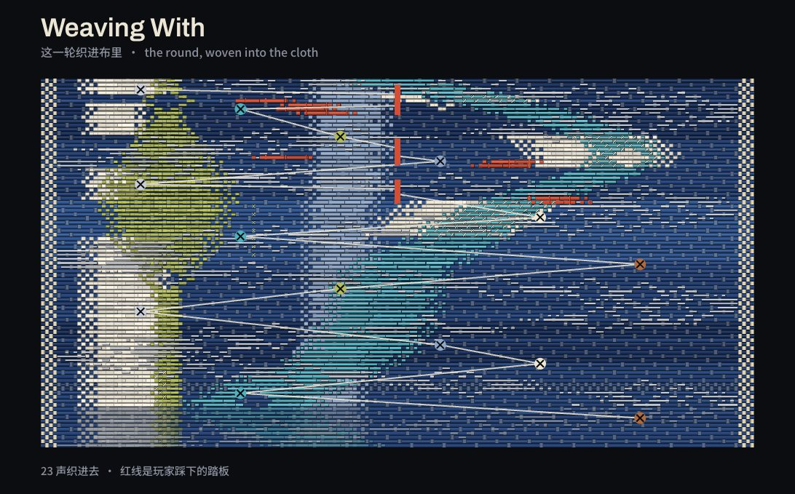

WEAVING WITH · COTAI MUDFLAT
怎么参与
手势 GESTURE

跟随光点
Follow a light with an open hand.
点中，那一位行动者响一声。
Meet it, and that actant sounds once.

抓住换页
Close your hand and move.
左右移，换一层。松开，停在这一页。
Move sideways to change the page. Release to stay.
踏板 TREADLE

1 踩下编织
Step, and weave.
这一下织进正在织的布里。
That press is woven into the cloth.

2 生成自己的织物轨迹
Your own path, woven into the cloth.
扫码保存。再踩踏板，回到编织页面。
Scan to keep it. Step again to return to the loom.